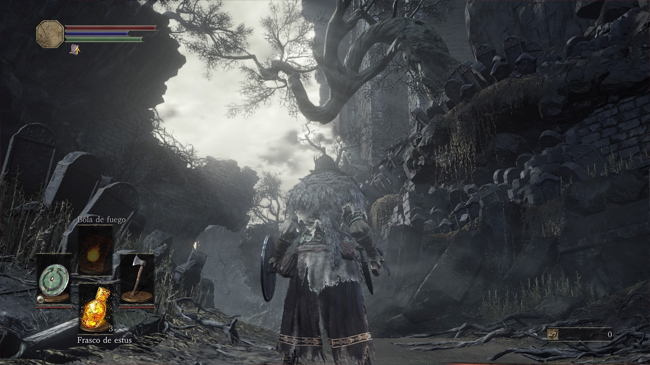
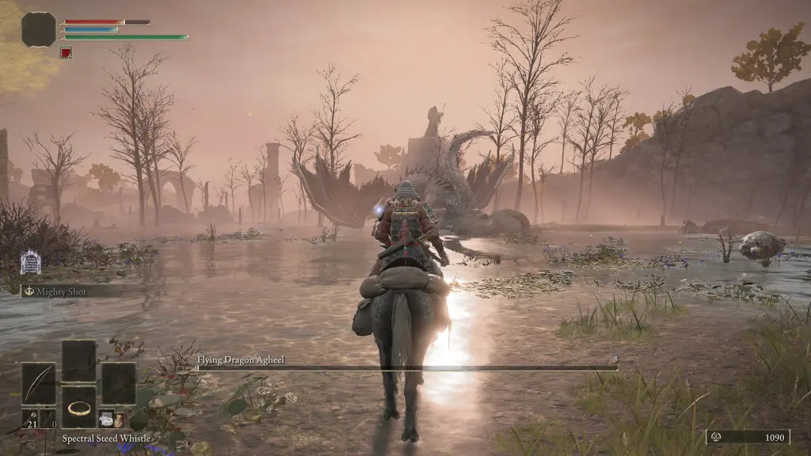
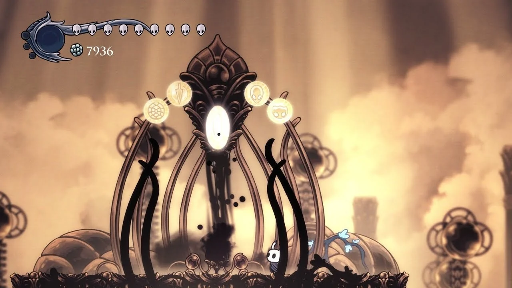
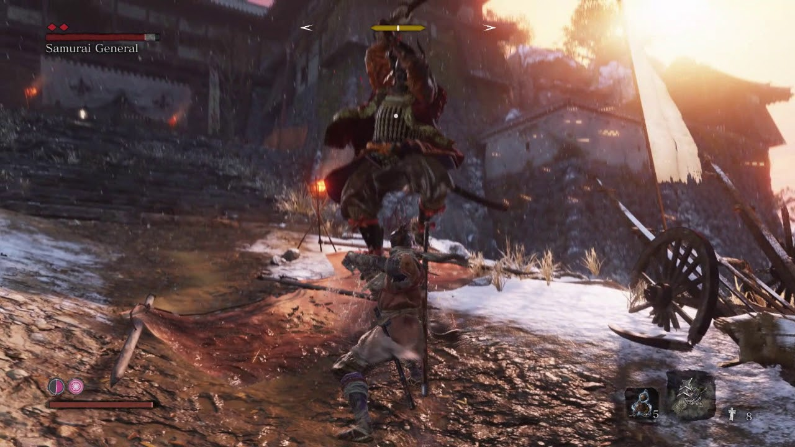
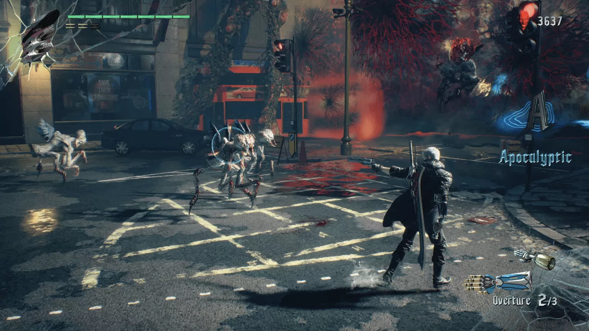

Dark Souls 3

A série Dark Souls, desenvolvida pela FromSoftware, é praticamente sinônimo de dificuldade no mundo dos videogames. Porém em Dark Souls 3 que a coisa complica, sua conquista mais temida é Master of Rings, Requer TODOS os anéis do jogo, inclusive variações +1 e +2 (só aparecem em NG+ e NG++). Alguns anéis são facilmente perdíveis e exigem decisões específicas ou rotas alternativas. Exige no mínimo 3 runs completas. Ver na Steam
Elden Ring

Em Elden Ring, presente no PlayStation 5 (PS5), PlayStation 4 (PS4), Xbox Series X e Xbox Series S, Xbox One e PC, o jogador viaja com liberdade um mundo aberto vivo e repleto de narrativas a serem descobertas. No controle de um guerreiro maculado que deve salvar o mundo, a missão é superar chefes marcantes pelo nível de complexidade, explorando recursos adquiridos pelas Terras Intermédias. O jogo permite invocar espíritos e até mesmo outros players para ajudar na gameplay. Sua Platina demorou cerca de 6 anos após o lançamento. Ver na Steam
Hollow Knight

Hollow Knight é um jogo de ação e aventura indie estilo metroidvania que coloca o jogador em uma jornada 2D clássica, na qual um cavaleiro inseto desbrava um reino subterrâneo repleto de criaturas horripilantes, com mais de 150 inimigos e 40 chefes para derrotar. Uma pedida imperdível para fãs de games indies, Hollow Knight é uma boa opção pois surgiu após uma campanha de financiamento coletivo. O título possui versões de PC, Xbox One, PlayStation 4 (PS4) e Nintendo Switch. Sua conquista "Abrace o Vazio" exige que o jogador evolua o ferrão dos sonhos e desafie os 5 Panteões para que faça o 3 final, essa conquista é extremamente dificil pois no 5 panteão o jogador deve derrotar todos os chefes do jogo direto e sem morrer. Além de suas conquistas de Speedrun, de zerar o jogo em 20, 10 e 5 horas. Ver na Steam
Sekiro: Shadows Die Twice

Antes de Elden Ring conquistar o prêmio de melhor jogo do ano pelo The Game Awards, a From Software já havia vencido a badalada premiação com Sekiro: Shadows Die Twice, em 2019. Apesar de ser o criador de games souls, Hidetaka Miyazak impôs um universo totalmente diferente e com mecânicas únicas, como a habilidade de agarrar e a possibilidade de desviar dos ataques inimigos. Algumas de suas conquistas são obter todos os finais, itens, ninjutsus, aprimorar tudo, explorar 100% e etc. Ver na Steam
Crypt of the NecroDancer
Crypt of the NecroDancer é um dos roguelikes rítmicos mais difíceis já feitos, e suas conquistas estão entre as mais insanas do mundo dos jogos. Abaixo estão algumas das conquistas mais brutais desse jogo, com foco em dificuldade extrema, execução impecável e paciência quase sobre-humana. Algumas de suas conquistas são Você precisa zerar o jogo no Coda que é sem morrer, mas não é só isso por que se você tomar dano, errar o ritmo, pisar no ouro, você morre . Sua conquista de Speedrun é zerar o jogo em 15 minutos, e sua conquista mais difícil é zerar o jogo com todos os personagens em menos de 30 minutos.
Super Meat Boy
Lançado em 2010 pela Team Meat, Super Meat Boy é um jogo de plataforma indie conhecido por sua dificuldade extrema. Os jogadores controlam um cubo de carne que deve atravessar níveis cheios de serras giratórias, espinhos e outros perigos. Sua conquista que faz muitos jogadores desistirem é terminar todos os níveis dark world no modo sem morrer. Reflexos e precisão milimétrica é necessária. Ver na Steam
Devil May Cry 5

Devil May Cry 5 tem várias conquistas difíceis, mas algumas são verdadeiramente insanas, exigindo habilidade de alto nível, repetição, e domínio completo de cada personagem. Sua conquista mais insana é zerar o jogo em dificuldades diferentes com nota máxima, porém na dificuldade Hell and Hell se você tomar um hit é morte instantânea e você só tem 3 continues. Ver na Steam